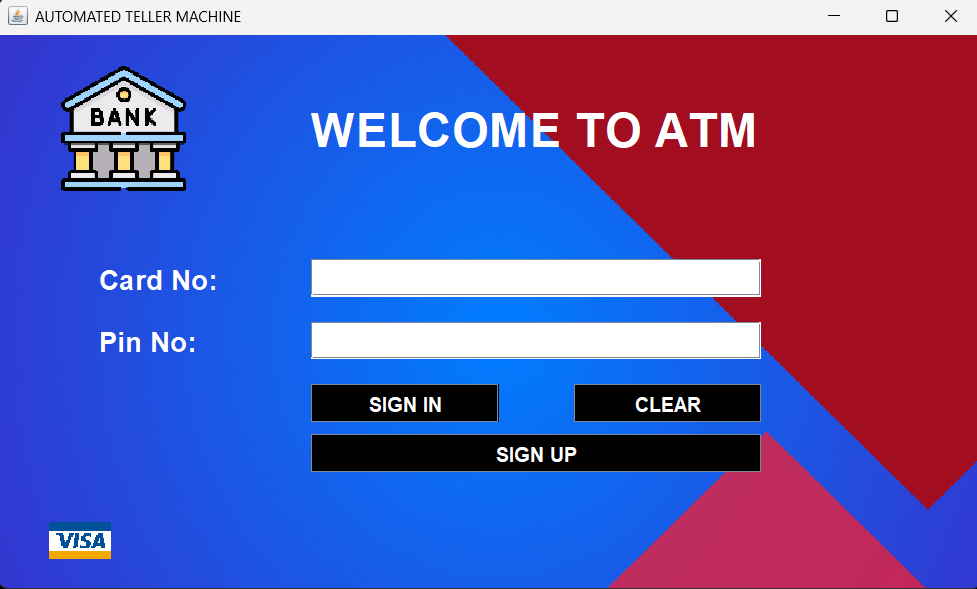
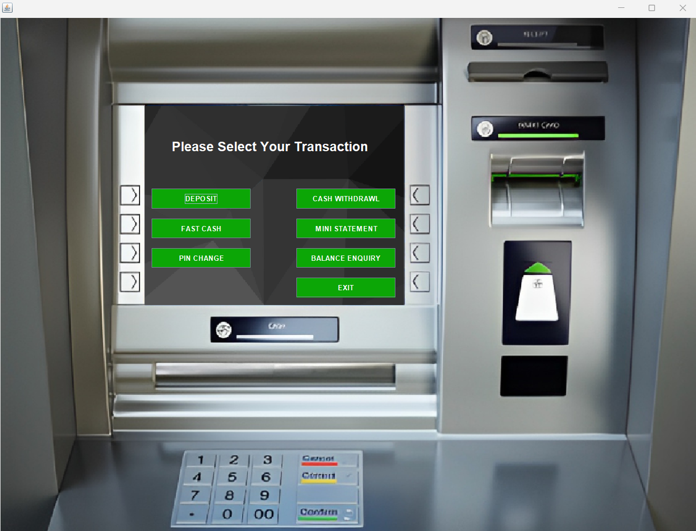

ATM Simulator
A Java-based console application simulating real ATM operations


Project Overview
A console-based ATM simulator built with Java, implementing core banking operations like withdrawals, deposits, balance checks, and PIN verification. Designed to demonstrate object-oriented programming (OOP) principles and file handling for persistent data storage.
Technology
Java (JDK 17), File I/O, Object-Oriented Design
Features
PIN auth, transaction history, account management
Purpose
Academic project to master Java and OOP concepts
Key Functionalities
- Secure PIN-based authentication
- Deposit/withdraw funds with validation
- View transaction history
- Persistent data storage (text files)
- Error handling for invalid inputs
Technical Highlights
// Sample Java code for PIN verification
public boolean verifyPin(int enteredPin) {
return this.pin == enteredPin;
}